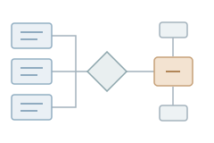

Stencil Transformers
Studying what transformer attention learns in finite-difference partial differential equation tasks.
NeurIPS 2026 · Interpretability for Discovery workshop · Poster
I work on interpretable machine learning, scientific computing, and trustworthy AI. I study what models learn, how they fail, and what evidence is needed before we rely on them.
My research sits between model interpretation and applied machine learning. I build controlled experiments and reproducible tools to study learned mechanisms, evaluate scientific models, and test claims about AI systems.
Studying what transformer attention learns in finite-difference partial differential equation tasks.
NeurIPS 2026 · Interpretability for Discovery workshop · Poster
Evaluating transformer-based spatial reconstruction for temperature and precipitation data.
NeurIPS 2026 · Tackling Climate Change with Machine Learning workshop · Oral

Building evidence-gated evaluations for claims about AI oversight systems.
Trustworthy AI · Evaluation